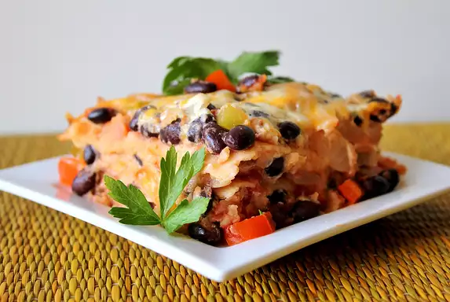
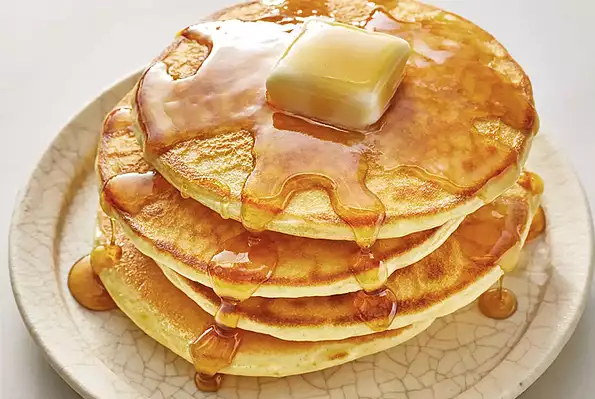
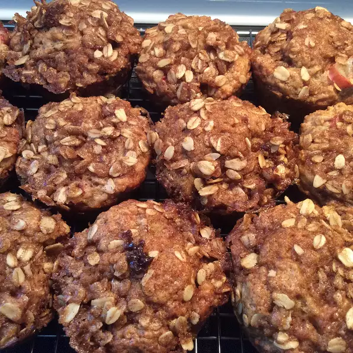

Recipe Page
Black Bean Lasagna

A delicious vegetarian lasagna using corn tortillas instead of lasagna noodles, layered with salsa, black beans,
cheese, and guacamole.
Ingredients
- 1 tablespood vegetable oil
- 2 onions
- 4 cloves garlic
- 1/2 green bell pepper
- 1/2 red bell pepper
- 1 can chopped tomatoes
- 1 cup salsa
- 2 cans black beans
- salt and black pepper to taste
- 2 avacados
- 1 tablespoon fresh lemon juice
- 12 corn tortillas
- 2 cups shredded Chedder cheese
Steps
- Preheat oven to 400 degrees F (200 degrees C). Lightly grease a 9x13-inch baking dish.
- Warm oil in a large skillet over medium heat. Stir in onions, 3 cloves of chopped garlic, and green and red
bell peppers. Cook until the onions are soft and translucent. Stir in tomatoes with juice, salsa, and black
beans. Season with salt and pepper. Bring to a simmer, and cook about 3 minutes.
- In a bowl, mash the avocados with 1 clove chopped garlic and lemon juice.
- Place a layer of tortillas on the bottom of the baking dish. Spread 1/3 of the tomato and bean mixture on
top. Spread 1/2 of guacamole on top, then sprinkle with 1/3 of cheese. Lay out another layer of tortillas.
Top with half of the remaining tomato and bean mixture. Then spread remaining guacamole on top. Sprinkle
with half the cheese. Repeat with remaining ingredients.
- Bake in preheated oven for 35 minutes, or until sauce is bubbly.
Nutrition Facts
Per Serving: 331 calories; protein 11.7g; carbohydrates 29.8g; fat 19.7g; cholesterol 29.7mg; sodium 471.8mg.
Pancakes

This is a great recipe that I found in my Grandma's recipe book. Judging from the weathered look of this recipe
card, this was a family favorite.
Ingredients
- 1 1/2 cups all-purpose flour
- 3 1/2 teaspoons baking powder
- 4 14 teaspoon salt
- 1 tablespoon white sugar
- 1/4 cups milk
- 1 eggs
- 3 tablespoon butter
Steps
- In a large bowl, sift together the flour, baking powder, salt and sugar. Make a well in the center and pour
in the milk, egg and melted butter; mix until smooth.
- Heat a lightly oiled griddle or frying pan over medium-high heat. Pour or scoop the batter onto the griddle,
using approximately 1/4 cup for each pancake. Brown on both sides and serve hot.
Nutrition Facts
Per Serving: 158 calories; protein 4.5g; carbohydrates 21.7g; fat 5.9g; cholesterol 37.7mg; sodium 503.6mg.
Rhubarb Crisp Muffins

If you can't decide between muffins and fruit crisp try this deliciously easy combo that tastes like something
straight out of the best cafe!
Ingredients
- 1 cup diced rhubarb
- 2/3 cup all-purpose flour
- 23 whole wheat flour
- 1/2 cup brown sugar
- 1/2 teaspoon baking soda
- 1/2 teaspoon salt
- 1/2 teaspoon ground cinnamon
- 1/2 cup vanilla yogurt
- 1/4 cup oil
- 1 egg
- 1/4 brown sugar
- 1/4 cup rolled oats
- 2 tablespoons melted butter
- 1/2 teaspoon ground cinnamon
Steps
- Preheat oven to 350 degrees F (175 degrees C). Line 12 muffin cups with paper muffin liners.
- Stir rhubarb, all-purpose flour, whole wheat flour, 1/2 cup brown sugar, baking soda, salt, and 1/2 teaspoon
cinnamon together in a large bowl.
- Whisk yogurt, oil, and egg together in a separate bowl; pour into rhubarb mixture and stir until just
combined and batter has a thick, dough-like consistency. Spoon batter into muffin cups.
- Stir 1/4 cup brown sugar, rolled oats, melted butter, and 1/2 teaspoon cinnamon together in a small bowl;
top batter with about 1 tablespoon of oats mixture.
- Bake in the preheated oven until golden, about 20 minutes. Cool 15 minutes before removing to wire rack.
Nutrition Facts
Per Serving: 181 calories; protein 3g; carbohydrates 26.8g; fat 7.3g; cholesterol 21.1mg; sodium 180.4mg